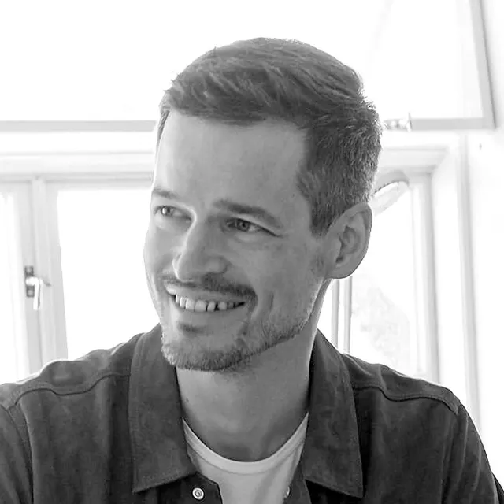
Iver Berg Blomsøy
ARKITEKT | Master i Arkitektur - Daglig leder - Partner
Arkitektene
Arkitekter og interiørarkitekter med ulike erfaringer, samlet rundt et felles faglig engasjement.

ARKITEKT | Master i Arkitektur - Daglig leder - Partner
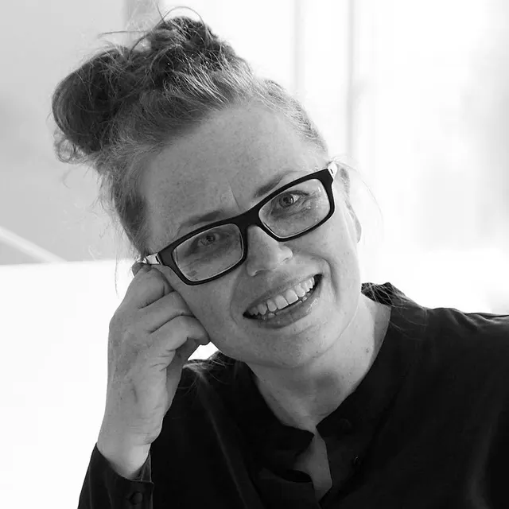
SIVILARKITEKT | Fagansvarlig - Partner
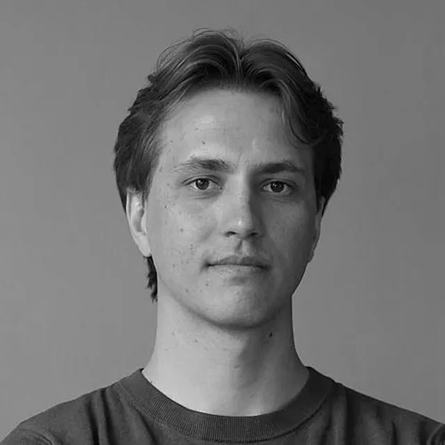
ARKITEKT MNAL | Master of Science in Architecture
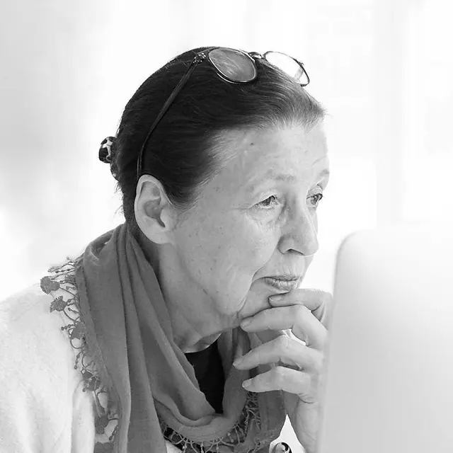
INTERIØRARKITEKT MNIL
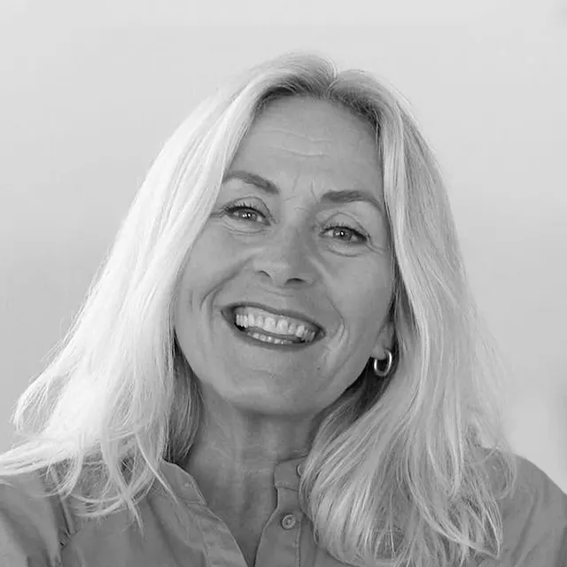
INTERIØRARKITEKT MNIL
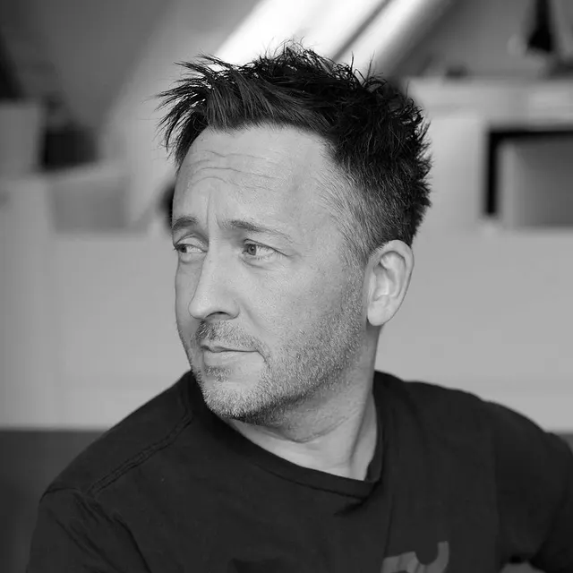
ARKITEKT | Master i Arkitektur
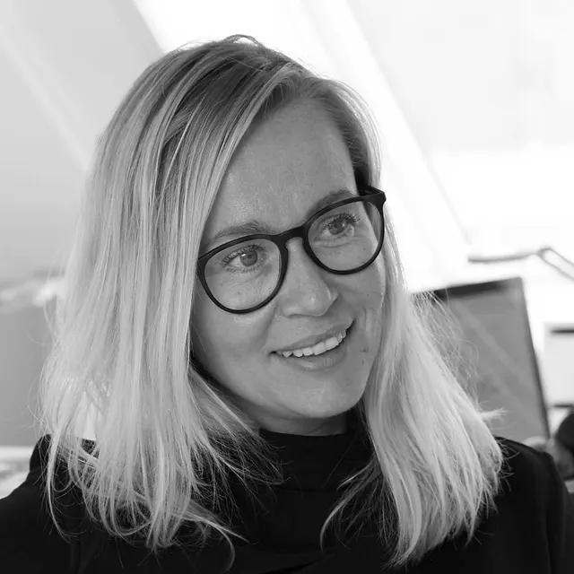
SIVILARKITEKT MNAL
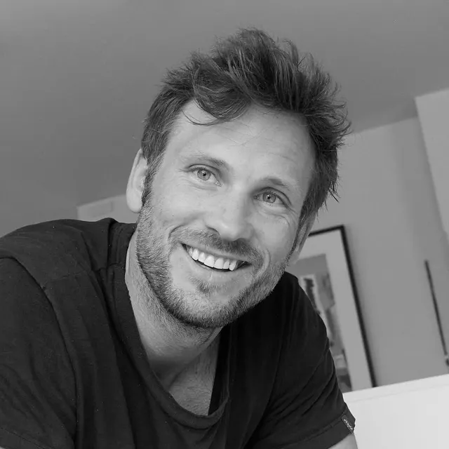
ARKITEKT | Master i Arkitektur
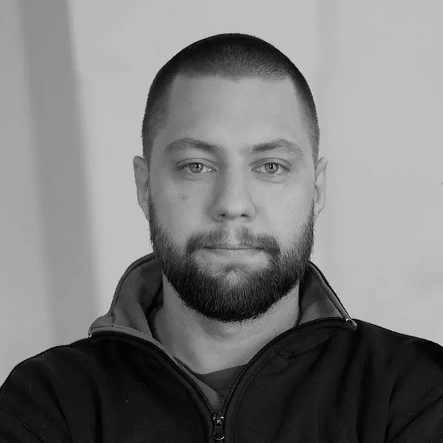
ARKITEKT MNAL | Master i Arkitektur
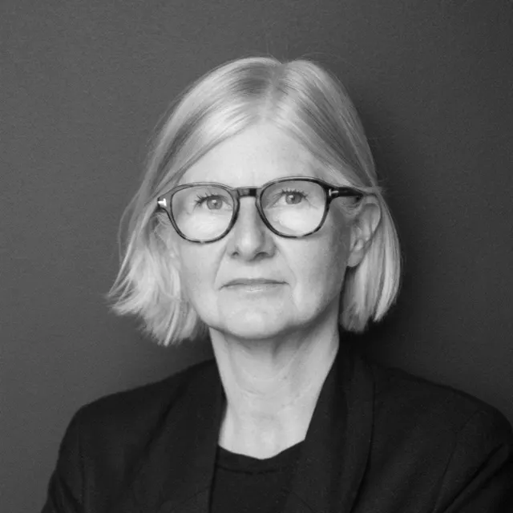
SIVILARKITEKT MNAL
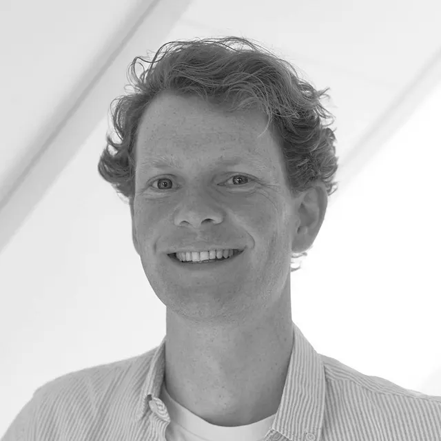
ARKITEKT MNAL | Master i Arkitektur
La oss begynne med en samtale